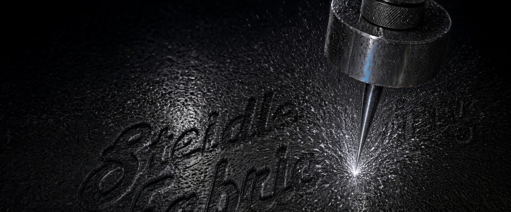

01
Waterjet cutting
Custom parts and shapes cut from your drawing or sketch.
We cut with a high-pressure stream of water, not heat, so the cut edge has no heat-affected zone.

Steidle Fabricating / Since 1955
In Bromley, KY since 1955.
Send a drawingWhat we do
Custom parts and shapes cut from your drawing or sketch.
We cut with a high-pressure stream of water, not heat, so the cut edge has no heat-affected zone.
Custom parts and assemblies welded to your drawing or description.
Parts machined to your drawing or project needs.
From drawing to part
Email your drawing or sketch to sales@steidlefab.com, or call 859-581-0122.
We get back to you to talk through material, quantity and details.
We cut, weld or machine your part to your drawing in Bromley.
Beyond the part
Custom metal signs made to your design. Tell us the name or lettering you want, share your own original artwork or idea, and describe where the sign will go.
Explore custom signs